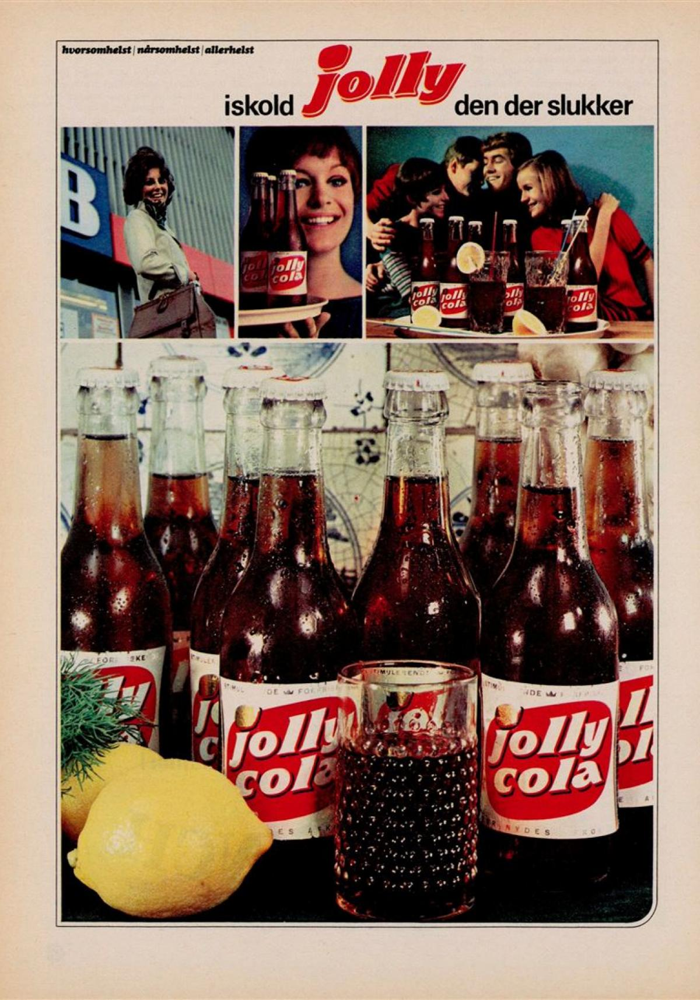
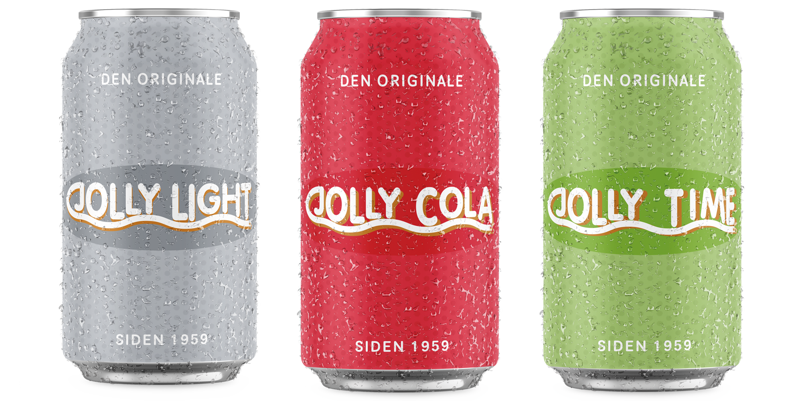

Om Os
Jolly har en historie der strækker sig helt tilbage til 1959. Vi er stolte repræsentanter for danskerne og alt hvad vores skønne samfund har at byde på!
En ægte dansk original
Jolly Cola er en dansk sodavand der for første gang fremtrådte i 1959. Efter lanceringen blev Jolly Cola hurtigt et af de helt store sodavandbrands på det danske marked. I år 2003 overtog Bryggeriet Vestfyen næsten alle Jolly Colas aktier og stod derfra for firmaet videre udvikling. Jolly Cola har altså eksisteret ganske længe og den har plads i enhver danskers hjerte på den ene eller den anden måde. Smagen har altid været den samme - sød, forfriskende og lækker! På samme tid har vi danskere også altid de samme originaler der sætter pris på rigtig kvalitet! Så følg os på vores rejse, hvor vi vedholder vores værdier om gode forfriskninger og god kvalitet - og mest af alt originalitet!
Rebranding
Selvom Jolly Cola er den velkendte klassiker som den nu engang er, så blev det i 2020 besluttet, at brandet skulle genopfindes. Dette skulle gøre igennem opdatering af etiket, farvepalette og markedsføring. Hos Jolly Cola kan vi lide at følge med tiden og vil derfor hele tiden sørge for at appelere til vores kunder på bedst mulig facon. Vi har ændret vores ellers ikoniske logo så det appelerer mere til de danske forbrugere som de er i dag. Vi stræber efter at være de bedste på markedet og er konstant i udvikling så vi hele tiden kan tage os ud fra vores konkurrenter. Prøv en Jolly Cola i dag med samme gode smag og kvalitet som for 60 år siden!
